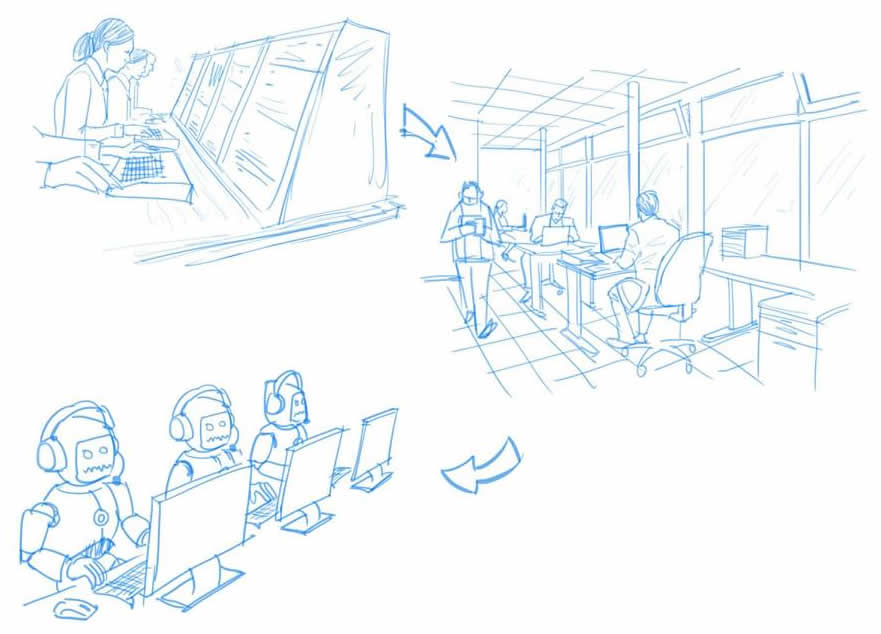

Unlike other organizations that invest a lot of money into technologies and cutting-edge digitalization to grow in their operations and increase efficiency. They may be well into tangible products like mobile phones (Apple Inc.), Coffee (Starbucks) or even clothes, shoes or bags etc. (Nike). On the flipside we have our beloved organization AIESEC, we “sell” (provide) quality experiences, we do this through leadership and exchange and we have been able to achieve this in the past through ‘cross cultural leadership development experiences’. How do we stay relevant as an organization amidst state of the art technology?

Three things we can do:
A stitch in time saves nine
1. Shaping what we do around what the world needs By shaping what we do around what the world needs NOW! We prepare ourselves for the kind of world we will be living in by 2020. What if we accustom ourselves to changes that the world faces and become to react to global changes, such that we are the first-choice partners for coming up with well-aligned solutions to world issues, affecting young people or otherwise. We will be able to adapt easily because we will have systems in place that can swiftly adjust to the new changes. 2. Review the AIESEC International – Local Committee Team Structures Right now! If we are going to digitalize some of our platforms in the spirit of Growing Disruptively, we need to review the AIESEC structures at various levels of the organization to ensure there are no redundant roles. Otherwise, we will be creating leaders that don’t learn through leadership development experiences. 3. GCPs from growing NGOs with similar visionsWe won’t be the first Non –Governmental Organization to actually reach to the world in an attempt to be accessible to everyone, everywhere or try to grow disruptively. So why don’t we learn from veterans in the field who have been there and replicate these cases of success in our beloved organization.
4. Improve and Invent We need to get our minds out of the clouds and treat ourselves like a startup and seize opportunities as they come by. We need to also learn from AIESEC 2015, let’s review our current progress in our various programs and come up with innovative ways to make these programs cash cows and also optimize the use of our multisided platform EXPAYSOFOP to make sure we are not letting go of any visitor/stranger. 5. Customer Flow – More focus on Value delivery (EWA – LLC)This is the last but not the least implication of the AIESEC we are likely to have by 2020. We will have been able to successfully win the heart of many visitors in the EWA stage. Now we will be able to pay rapt attention to our customers in the Value Delivery stage and make sure that the NPS at the end of the day reflects go things of the organization.